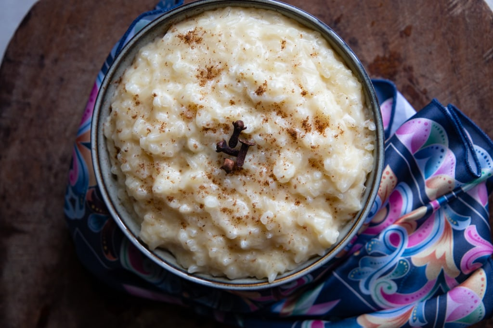

Milk with Rice

Costa Rican arroz con leche combines white rice, sweetened condensed milk, sugar, cinnamon and vanilla for the perfect sweet dessert served warm or cold!
This dish isn’t just a Latin American or Costa Rican favorite though. Known as rice pudding in English, this dessert is popular in Asia, Europe and even Canada and the United States.
It’s a gluten-free food.
Arroz con leche originated in Spain during the middle ages and is thought to have been inspired by Arabic culinary tradition.
While the Spanish style of arroz con leche usually requires cinnamon and vanilla, the recipe exists all over in different variations.
Ingredients
- White rice
- Water
- Margarine or butter (optional)
- Cinnamon sticks
- Whole cloves
- Granulated with sugar
- Sweetened condensed milk
- Evaporated milk
- Pinch of saltlime zest
- Vanilla extract
Steps
- In a large saucepan, combine the rice, margarine, 3.5 cups water, rice, cinnamon stick, and cloves.
- Boil over high heat until the water dries up, stirring occasionally to avoid the rice sticking to the bottom of the pan.
- Once the rice dries up add the hot water, sugar, and evaporated milk, stirring constantly.
- Add half the can of sweetened condensed milk, the lime zest and pinch of salt. Boil and stir until the desired consistency is reached.